4. Compartment#
Part of the Fig. 4 chapter — see it for the panel-by-panel map. The first code cell sets ENTEX_ROOT and activates the no-overwrite guard (see the Reproduction guide). Outputs shown are the author’s original run.
# === Reproduction setup — edit ENTEX_ROOT / REF_ROOT for your machine ===
import os, sys
ENTEX_ROOT = os.environ.get('ENTEX_ROOT', '/large_storage/zhoulab/zhoujt/project/ENTEx')
REF_ROOT = os.environ.get('REF_ROOT', '/large_storage/zhoulab/ref')
BOOK_ROOT = os.environ.get('BOOK_ROOT', f'{ENTEX_ROOT}/analysis/HumanCellEpigenomeAtlas')
sys.path.insert(0, BOOK_ROOT)
os.chdir(f'{ENTEX_ROOT}/analysis') # original working directory
import repro_guard # no-overwrite guard (default: skip existing)
import numpy as np
import pandas as pd
import seaborn as sns
import matplotlib as mpl
import matplotlib.pyplot as plt
import os
import time
import cooler
from glob import glob
from scipy.stats import pearsonr
from sklearn.decomposition import PCA
from concurrent.futures import ProcessPoolExecutor, as_completed
mpl.style.use('default')
mpl.rcParams['pdf.fonttype'] = 42
mpl.rcParams['ps.fonttype'] = 42
mpl.rcParams['font.family'] = 'sans-serif'
mpl.rcParams['font.sans-serif'] = 'Helvetica'
import warnings
warnings.filterwarnings("ignore")
indir_raw = f'{ENTEX_ROOT}/merged_cool_raw/'
indir_impute = f'{ENTEX_ROOT}/merged_cool_impute/100K/'
outdir = f'{ENTEX_ROOT}/analysis/compartment/'
# indir = indir_impute
indir = indir_raw
coollist = glob(f'{indir}L2any/c*-c*.cool')
print(len(coollist))
420
cool_df = pd.DataFrame(coollist, columns=['cool_path'])
cool_df['L2any'] = [xx.split('/')[-1].split('.')[0] for xx in cool_df['cool_path'].values]
cool_df['L1'] = cool_df['L2any'].str.split('-').str[0]
cool_df.loc[cool_df['L1']=='c7', 'L1'] = 'c35'
cool_df.loc[(cool_df['L1']=='c35') & cool_df['L2any'].str.split('-').str[1].isin(['c0','c10','c11']), 'L1'] = 'c36'
def merge_impute_cool(group, cool_path):
# os.makedirs(f'{indir}L1/', exist_ok=True)
cool_list_path = f'{indir}L1/coollist_{group}.txt'
cool_path.to_csv(cool_list_path, header=False, index=False)
cmd = f'hicluster merge-cool --input_cool_tsv_file {cool_list_path} --output_cool {indir}L1/{group}.cool'
os.system(cmd)
return f'{indir}L1/{group}.cool'
def merge_raw_cool(group, cool_path):
# os.makedirs(f'{outdir}chunk{group}/', exist_ok=True)
cmd = f'cooler merge {indir}L1/{group}.cool ' + ' '.join(list(cool_path))
os.system(cmd)
return f'{indir}L1/{group}.cool'
from concurrent.futures import ProcessPoolExecutor, as_completed
cpu = 30
with ProcessPoolExecutor(cpu) as executor:
futures = {}
for group,df in cool_df.loc[cool_df['L1'].isin(['c35','c36'])].groupby('L1'):
future = executor.submit(
merge_raw_cool,
group=group,
cool_path=df['cool_path'],
)
futures[future] = group
result = []
for future in as_completed(futures):
group = futures[future]
result.append(future.result())
print(f'{group} finished')
c36 finished
c35 finished
## raw
# cmd = f'cooler merge {outdir}merged.raw.cool ' + ' '.join(list(result))
# os.system(cmd)
# cmd = f'cooler zoomify -r 5000N -n 32 {outdir}merged.raw.cool'
# os.system(cmd)
## impute
cool_list_path = f'{indir}coollist.txt'
np.savetxt(cool_list_path, result, fmt='%s', delimiter='\n')
cmd = f'hicluster merge-cool --input_cool_tsv_file {cool_list_path} --output_cool {indir}merged.cool'
os.system(cmd)
command merge-cool
input_cool_tsv_file /large_storage/zhoulab/zhoujt/project/ENTEx/merged_cool_impute/100K/coollist.txt
output_cool /large_storage/zhoulab/zhoujt/project/ENTEx/merged_cool_impute/100K/merged.cool
hicluster: Executing merge-cool...
merge-cool finished.
0
res = 100000
chrom_size_path = '/large_experiments/zhoulab/ref/hg38/fasta/hg38.main.chrom.sizes'
chrom_sizes = cooler.read_chromsizes(chrom_size_path, all_names=True)
chrom_sizes = chrom_sizes.iloc[:22]
if os.path.isfile(f'{outdir}merged_comp.hdf'):
bin_df = pd.read_hdf(f'{outdir}merged_comp.hdf', key='data')
else:
bin_df = cooler.util.binnify(chrom_sizes, res)
bin_df['chrom'] = bin_df['chrom'].astype(str)
bin_df.shape
(28760, 7)
cpg = pd.read_csv(f'{REF_ROOT}/hg38/hg38.100kbin.CpG.txt', header=0, index_col=3, sep='\t')
cpg['CpG_density'] = cpg['14_user_patt_count'] / (cpg['13_seq_len'] - cpg['11_num_N'])
Fit PC model with merged raw#
Qall = []
binall = []
mode = 'impute'
if mode=='raw':
cool = cooler.Cooler(f'{indir_raw}merged.mcool::resolutions/100000')
elif mode=='impute':
cool = cooler.Cooler(f'{indir_impute}merged.cool')
fig, axes = plt.subplots(5, 5, figsize=(15,15))
for i,c in enumerate(chrom_sizes.index):
Q = cool.matrix(balance=False, sparse=True).fetch(c).toarray()
Q = Q - np.diag(np.diag(Q))
rowsum = Q.sum(axis=0)
thres = [np.percentile(rowsum[rowsum>0], 50), np.percentile(rowsum[rowsum>0], 99)]
thres.append(thres[0]*2-thres[1])
ax = axes.flatten()[i]
sns.histplot(rowsum, bins=100, ax=ax)
for t in thres:
ax.plot([t, t], [0, ax.get_ylim()[1]*0.5], c='r')
ax.set_title(c)
binfilter = (rowsum>thres[-1])
binall.append(binfilter)
Q = Q[binfilter][:, binfilter]
Qall.append(Q)
print(c)
for i in range(chrom_sizes.shape[0], axes.flatten().shape[0]):
axes.flatten()[i].axis('off')
chr1
chr2
chr3
chr4
chr5
chr6
chr7
chr8
chr9
chr10
chr11
chr12
chr13
chr14
chr15
chr16
chr17
chr18
chr19
chr20
chr21
chr22
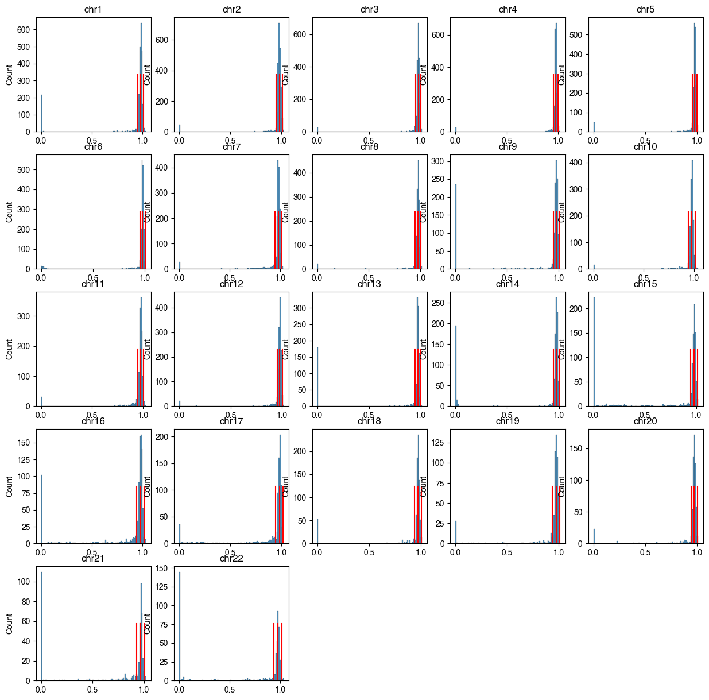
# coollist = pd.read_csv(f'{ENTEX_ROOT}/clustering/merged/coollist_group.csv', header=None, index_col=0)
# coollist.columns = ['coolpath', 'group']
# coollist['L2any'] = ['-'.join(xx.split('-')[:2]) for xx in coollist['group'].values]
# coollist['L1'] = coollist['L2any'].str.split('-').str[0]
# for xx,df in coollist.groupby('L2any'):
# cool = cooler.Cooler(f'{indir}L2any/{xx}.cool')
# if df.shape[0]!=cool.info['group_n_cells']:
# print(xx, df.shape[0])
# tot = 0
# for xx,df in coollist.groupby('L1'):
# cool = cooler.Cooler(f'{indir}L1/{xx}.cool')
# tot += cool.info['group_n_cells']
# if df.shape[0]!=cool.info['group_n_cells']:
# print(xx, df.shape[0], cool.info['group_n_cells'])
# print(tot)
86689
cool.info
{'bin-size': 100000,
'bin-type': 'fixed',
'creation-date': '2024-09-16T00:07:04.659375',
'format': 'HDF5::Cooler',
'format-url': 'https://github.com/open2c/cooler',
'format-version': 3,
'generated-by': 'cooler-0.10.0',
'genome-assembly': 'unknown',
'group_n_cells': 86689,
'metadata': {},
'nbins': 28760,
'nchroms': 22,
'nnz': 20182844,
'storage-mode': 'symmetric-upper',
'sum': 15654.352142333984}
fig, axes = plt.subplots(5, 5, figsize=(15,15))
for i,c in enumerate(chrom_sizes.index):
ax = axes.flatten()[i]
n_bins = int(chrom_sizes[c] // 100000) + 1
tmp = np.zeros((n_bins, n_bins))
tmp[np.ix_(binall[i], binall[i])] = Qall[i]
ax.imshow(tmp, cmap='bwr', vmin=-np.percentile(Qall[i], 95), vmax=np.percentile(Qall[i], 95))
ax.set_xticks([])
ax.set_yticks([])
ax.set_title(c, fontsize=15)
for i in range(chrom_sizes.shape[0], axes.flatten().shape[0]):
axes.flatten()[i].axis('off')
plt.tight_layout()
# plt.savefig(f'{indir}/plot/celltype_A_decay.pdf', transparent=True)
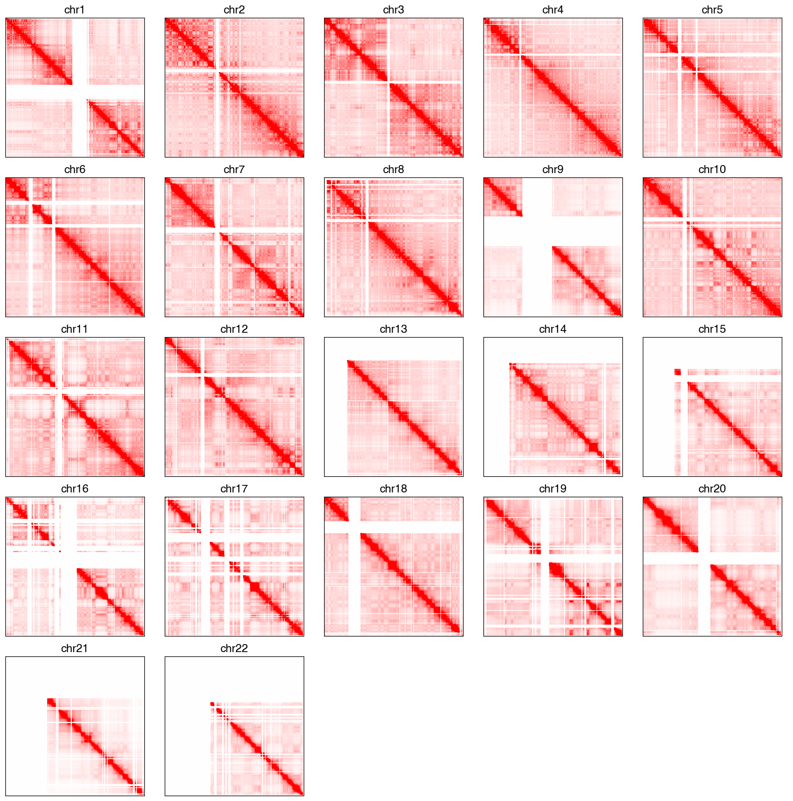
# comp = pd.read_hdf(f'{indir}compartment_majortype/comp_raw_merged.hdf', key='data')
Call = []
pcall = []
modelall = []
for k,chrom in enumerate(chrom_sizes.index):
Q = Qall[k].copy()
decay = np.array([np.mean(np.diag(Q, i)) for i in range(Q.shape[0])])
E = np.zeros(Q.shape)
row, col = np.diag_indices(E.shape[0])
E[row, col] = 1
for i in range(1, E.shape[0]):
E[row[:-i], col[i:]] = (Q[row[:-i], col[i:]] + 1e-5) / (decay[i] + 1e-5)
E = E + E.T
C = np.corrcoef(np.log2(E + 0.001))
vmin, vmax = np.percentile(C, 5), np.percentile(C, 95)
C[C<vmin] = vmin
C[C>vmax] = vmax
Call.append(C)
binfilter = binall[k]
# tmp = comp.loc[ct, (comp.columns.str.split('_').str[0]==chrom)]
# tmp.index = [int(xx.split('_')[1]) for xx in tmp.index]
# pcall.append(tmp[np.where(binfilter)[0]].values)
pca = PCA(n_components=2, svd_solver='arpack')
pc = pca.fit_transform(C)
cpgtmp = cpg.loc[cpg['#1_usercol']==chrom, 'CpG_density'].values[binfilter]
# i = 0
# if np.abs(pearsonr(cpgtmp, pc[:,0])[0])>np.abs(pearsonr(cpgtmp, pc[:,1])[0]):
# i = 0
# else:
# i = 1
r = []
for i in range(2):
labels, groups = pd.qcut(pc[:,i], 50, labels=False, retbins=True)
sad = np.array([[E[np.ix_(labels==i, labels==j)].sum() for i in range(50)] for j in range(50)])
count = np.array([[(labels==i).sum()*(labels==j).sum() for i in range(50)] for j in range(50)])
sad = sad / count
r.append((sad[:10, :10].sum() + sad[-10:, -10:].sum()) / (sad[:10, -10:].sum() + sad[-10:, :10].sum()))
if r[0]>r[1]:
i = 0
else:
i = 1
# if chrom=='chr3':
# i = 1
if pearsonr(cpgtmp, pc[:,i])[0]>0:
pc = pc[:,i]
modelall.append(pca.components_[i])
else:
pc = -pc[:,i]
modelall.append(-pca.components_[i])
pcall.append(pc)
print(chrom, i)
chr1 0
chr2 0
chr3 1
chr4 0
chr5 0
chr6 0
chr7 0
chr8 0
chr9 0
chr10 0
chr11 0
chr12 0
chr13 0
chr14 0
chr15 0
chr16 0
chr17 0
chr18 0
chr19 0
chr20 0
chr21 0
chr22 0
## impute
fig, axes = plt.subplots(2, 22, figsize=(66,4), gridspec_kw={'height_ratios':[5,0.2]}, sharex='col')
for i,c in enumerate(chrom_sizes.index):
ax = axes[0,i]
n_bins = int(chrom_sizes[c] // 100000) + 1
tmp = np.zeros((n_bins, n_bins))
tmp[np.ix_(binall[i], binall[i])] = Call[i]
ax.imshow(tmp, cmap='bwr', vmin=np.percentile(Call[i], 5), vmax=np.percentile(Call[i], 95))
ax.set_xticks([])
ax.set_yticks([])
ax.set_title(c, fontsize=15)
ax = axes[1,i]
# ax.set_title('PC1', fontsize=10)
sns.despine(bottom=True, left=True, ax=ax)
tmp = np.zeros(n_bins)
tmp[binall[i]] = pcall[i]# / np.std(pcall[i])
x, y = np.arange(n_bins), tmp
# x, y = np.arange(pcall[i].shape[0]), pcall[i]
ax.fill_between(x, y, 0, where=y >= 0, facecolor='C3', interpolate=True)
ax.fill_between(x, y, 0, where=y <= 0, facecolor='C0', interpolate=True)
ax.set_yticks([])
ax.set_ylim([np.percentile(y, 1), np.percentile(y, 99)])
plt.tight_layout()
# plt.savefig(f'{indir}/plot/celltype_compraw.pdf', transparent=True)
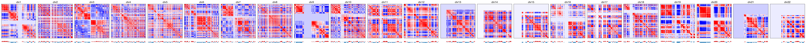
## raw
fig, axes = plt.subplots(2, 22, figsize=(66,4), gridspec_kw={'height_ratios':[5,0.2]}, sharex='col')
for i,c in enumerate(chrom_sizes.index):
ax = axes[0,i]
n_bins = int(chrom_sizes[c] // 100000) + 1
tmp = np.zeros((n_bins, n_bins))
tmp[np.ix_(binall[i], binall[i])] = Call[i]
ax.imshow(tmp, cmap='bwr', vmin=np.percentile(Call[i], 5), vmax=np.percentile(Call[i], 95))
ax.set_xticks([])
ax.set_yticks([])
ax.set_title(c, fontsize=15)
ax = axes[1,i]
# ax.set_title('PC1', fontsize=10)
sns.despine(bottom=True, left=True, ax=ax)
tmp = np.zeros(n_bins)
tmp[binall[i]] = pcall[i]# / np.std(pcall[i])
x, y = np.arange(n_bins), tmp
# x, y = np.arange(pcall[i].shape[0]), pcall[i]
ax.fill_between(x, y, 0, where=y >= 0, facecolor='C3', interpolate=True)
ax.fill_between(x, y, 0, where=y <= 0, facecolor='C0', interpolate=True)
ax.set_yticks([])
ax.set_ylim([np.percentile(y, 1), np.percentile(y, 99)])
plt.tight_layout()
# plt.savefig(f'{indir}/plot/celltype_compraw.pdf', transparent=True)
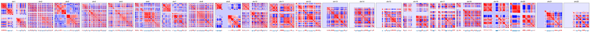
bin_df[f'{mode}_binfilter'] = np.concatenate(binall)
bin_df[f'{mode}_pcloading'] = 0
bin_df.loc[bin_df[f'{mode}_binfilter'], f'{mode}_pcloading'] = np.concatenate(modelall)
# np.save(f'{outdir}binfilter_impute.npy', binall)
# np.save(f'{outdir}pcloading_impute.npy', modelall)
selb = bin_df['raw_binfilter'] & bin_df['impute_binfilter']
print(selb.sum())
24121
fig, ax = plt.subplots(figsize=(4,4), dpi=300)
sns.scatterplot(data=bin_df.loc[selb], x='raw_pcloading', y='impute_pcloading', hue='chrom',
s=1, edgecolor='none', rasterized=True, ax=ax, palette='tab20')
plt.legend(bbox_to_anchor=(1.05, 1), loc='upper left', markerscale=5, ncol=2)
print(pearsonr(bin_df.loc[selb, 'raw_pcloading'], bin_df.loc[selb, 'impute_pcloading']))
PearsonRResult(statistic=0.9720753155640292, pvalue=0.0)
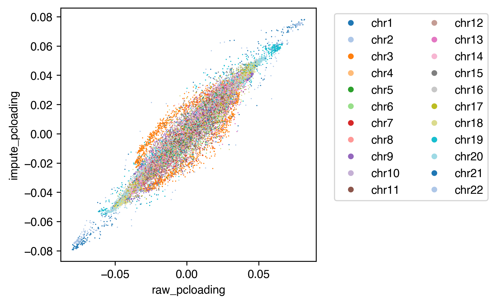
bin_df.to_hdf(f'{outdir}merged_comp.hdf', key='data')
def compute_comp(cool_path, keep_mat=False):
pcall = []
Call = []
cool = cooler.Cooler(cool_path)
for k,chrom in enumerate(chrom_sizes.index):
Q = cool.matrix(balance=False, sparse=True).fetch(chrom).toarray()
Q = Q - np.diag(np.diag(Q))
pc = np.zeros(Q.shape[0])
binfilter = binall[k]
Q = Q[binfilter][:, binfilter]
decay = np.array([np.mean(np.diag(Q, i)) for i in range(Q.shape[0])])
E = np.zeros(Q.shape)
row, col = np.diag_indices(E.shape[0])
E[row, col] = 1
for i in range(1, E.shape[0]):
E[row[:-i], col[i:]] = (Q[row[:-i], col[i:]] + 1e-5) / (decay[i] + 1e-5)
E = E + E.T
C = np.corrcoef(np.log2(E + 0.001))
vmin, vmax = np.percentile(C, 5), np.percentile(C, 95)
C[C<vmin] = vmin
C[C>vmax] = vmax
pc = (C-np.mean(C, axis=0)).dot(modelall[k])
pcall.append(pc)
if keep_mat:
Call.append(C)
if keep_mat:
return Call, pcall
else:
return np.concatenate(pcall)
bin_df = pd.read_hdf(f'{outdir}merged_comp.hdf', key='data')
binall = [bin_df.loc[bin_df['chrom']==chrom, 'raw_binfilter'] for chrom in chrom_sizes.index]
modelall = [bin_df.loc[(bin_df['chrom']==chrom), 'raw_pcloading'][binall[k]] for k,chrom in enumerate(chrom_sizes.index)]
## merged impute matrix compartment
Call, pcall = compute_comp(f'{indir_impute}merged.cool', keep_mat=True)
fig, axes = plt.subplots(2, 22, figsize=(66,4), gridspec_kw={'height_ratios':[5,0.2]}, sharex='col')
for i,c in enumerate(chrom_sizes.index):
ax = axes[0,i]
n_bins = int(chrom_sizes[c] // 100000) + 1
tmp = np.zeros((n_bins, n_bins))
tmp[np.ix_(binall[i], binall[i])] = Call[i]
ax.imshow(tmp, cmap='bwr', vmin=np.percentile(Call[i], 5), vmax=np.percentile(Call[i], 95), rasterized=True)
ax.set_xticks([])
ax.set_yticks([])
ax.set_title(c, fontsize=15)
ax = axes[1,i]
# ax.set_title('PC1', fontsize=10)
sns.despine(bottom=True, left=True, ax=ax)
tmp = np.zeros(n_bins)
tmp[binall[i]] = pcall[i]# / np.std(pcall[i])
x, y = np.arange(n_bins), tmp
# x, y = np.arange(pcall[i].shape[0]), pcall[i]
ax.fill_between(x, y, 0, where=y >= 0, facecolor='C3', interpolate=True)
ax.fill_between(x, y, 0, where=y <= 0, facecolor='C0', interpolate=True)
ax.set_yticks([])
ax.set_ylim([np.percentile(y, 1), np.percentile(y, 99)])
plt.tight_layout()
# plt.savefig(f'{indir}/plot/celltype_compraw.pdf', transparent=True)
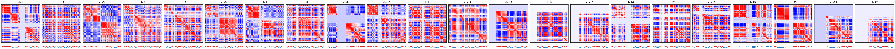
mode = 'impute'
bin_df[f'{mode}_binfilter'] = np.concatenate(binall)
bin_df[f'{mode}_pcloading'] = 0
bin_df.loc[bin_df[f'{mode}_binfilter'], f'{mode}_pcloading'] = np.concatenate(modelall)
# np.save(f'{outdir}binfilter_impute.npy', binall)
# np.save(f'{outdir}pcloading_impute.npy', modelall)
selb = bin_df['raw_binfilter'] & bin_df['impute_binfilter']
print(selb.sum())
24478
fig, ax = plt.subplots(figsize=(4,4), dpi=300)
sns.scatterplot(data=bin_df.loc[selb], x='raw_pcloading', y='impute_pcloading', hue='chrom',
s=1, edgecolor='none', rasterized=True, ax=ax, palette='tab20')
plt.legend(bbox_to_anchor=(1.05, 1), loc='upper left', markerscale=5, ncol=2)
print(pearsonr(bin_df.loc[selb, 'raw_pcloading'], bin_df.loc[selb, 'impute_pcloading']))
PearsonRResult(statistic=1.0, pvalue=0.0)
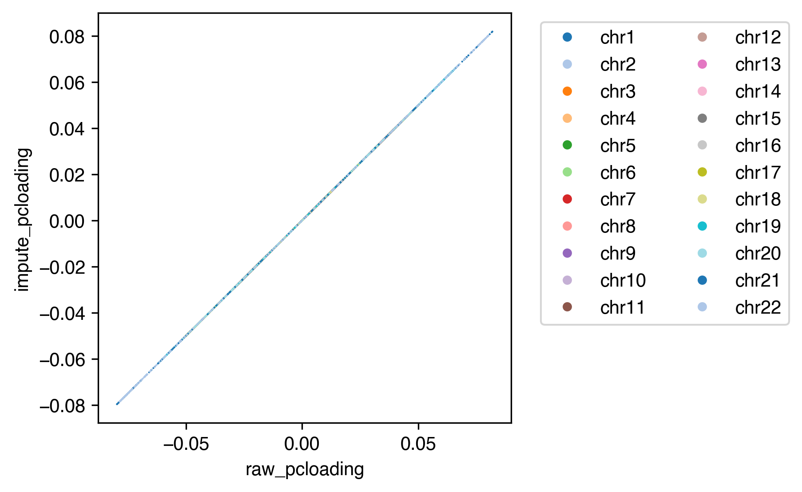
Call, pcall = compute_comp(f'{indir_impute}L1/c34.cool', keep_mat=True)
pc_impute = np.concatenate(pcall)
fig, axes = plt.subplots(2, 22, figsize=(66,4), gridspec_kw={'height_ratios':[5,0.2]}, sharex='col')
for i,c in enumerate(chrom_sizes.index):
ax = axes[0,i]
n_bins = int(chrom_sizes[c] // 100000) + 1
tmp = np.zeros((n_bins, n_bins))
tmp[np.ix_(binall[i], binall[i])] = Call[i]
ax.imshow(tmp, cmap='bwr', vmin=np.percentile(Call[i], 5), vmax=np.percentile(Call[i], 95), rasterized=True)
ax.set_xticks([])
ax.set_yticks([])
ax.set_title(c, fontsize=15)
ax = axes[1,i]
# ax.set_title('PC1', fontsize=10)
sns.despine(bottom=True, left=True, ax=ax)
tmp = np.zeros(n_bins)
tmp[binall[i]] = pcall[i]# / np.std(pcall[i])
x, y = np.arange(n_bins), tmp
# x, y = np.arange(pcall[i].shape[0]), pcall[i]
ax.fill_between(x, y, 0, where=y >= 0, facecolor='C3', interpolate=True)
ax.fill_between(x, y, 0, where=y <= 0, facecolor='C0', interpolate=True)
ax.set_yticks([])
ax.set_ylim([np.percentile(y, 1), np.percentile(y, 99)])
plt.tight_layout()
# plt.savefig(f'{indir}/plot/celltype_compraw.pdf', transparent=True)
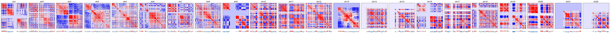
Call, pcall = compute_comp(f'{indir_raw}L1/c34.mcool::resolutions/100000', keep_mat=True)
pc_raw = np.concatenate(pcall)
fig, axes = plt.subplots(2, 22, figsize=(66,4), gridspec_kw={'height_ratios':[5,0.2]}, sharex='col')
for i,c in enumerate(chrom_sizes.index):
ax = axes[0,i]
n_bins = int(chrom_sizes[c] // 100000) + 1
tmp = np.zeros((n_bins, n_bins))
tmp[np.ix_(binall[i], binall[i])] = Call[i]
ax.imshow(tmp, cmap='bwr', vmin=np.percentile(Call[i], 5), vmax=np.percentile(Call[i], 95), rasterized=True)
ax.set_xticks([])
ax.set_yticks([])
ax.set_title(c, fontsize=15)
ax = axes[1,i]
# ax.set_title('PC1', fontsize=10)
sns.despine(bottom=True, left=True, ax=ax)
tmp = np.zeros(n_bins)
tmp[binall[i]] = pcall[i]# / np.std(pcall[i])
x, y = np.arange(n_bins), tmp
# x, y = np.arange(pcall[i].shape[0]), pcall[i]
ax.fill_between(x, y, 0, where=y >= 0, facecolor='C3', interpolate=True)
ax.fill_between(x, y, 0, where=y <= 0, facecolor='C0', interpolate=True)
ax.set_yticks([])
ax.set_ylim([np.percentile(y, 1), np.percentile(y, 99)])
plt.tight_layout()
# plt.savefig(f'{indir}/plot/celltype_compraw.pdf', transparent=True)
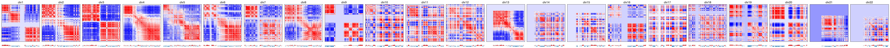
## c22 Epi-Aci
tmp = bin_df.loc[bin_df['raw_binfilter']]
tmp['raw_pc'] = pc_raw.copy()
tmp['impute_pc'] = pc_impute.copy()
fig, ax = plt.subplots(figsize=(4,4), dpi=300)
sns.scatterplot(data=tmp, x='raw_pc', y='impute_pc', hue='chrom',
s=1, edgecolor='none', rasterized=True, ax=ax, palette='tab20')
plt.legend(bbox_to_anchor=(1.05, 1), loc='upper left', markerscale=5, ncol=2)
print(pearsonr(pc_raw, pc_impute))
PearsonRResult(statistic=0.9698369792220771, pvalue=0.0)
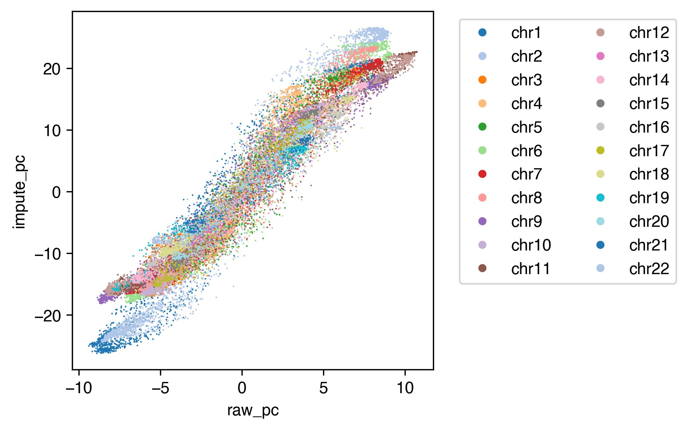
## c34 Fibro-Myo
tmp = bin_df.loc[bin_df['raw_binfilter']]
tmp['raw_pc'] = pc_raw.copy()
tmp['impute_pc'] = pc_impute.copy()
fig, ax = plt.subplots(figsize=(4,4), dpi=300)
sns.scatterplot(data=tmp, x='raw_pc', y='impute_pc', hue='chrom',
s=1, edgecolor='none', rasterized=True, ax=ax, palette='tab20')
plt.legend(bbox_to_anchor=(1.05, 1), loc='upper left', markerscale=5, ncol=2)
print(pearsonr(pc_raw, pc_impute))
PearsonRResult(statistic=0.9472669602893187, pvalue=0.0)
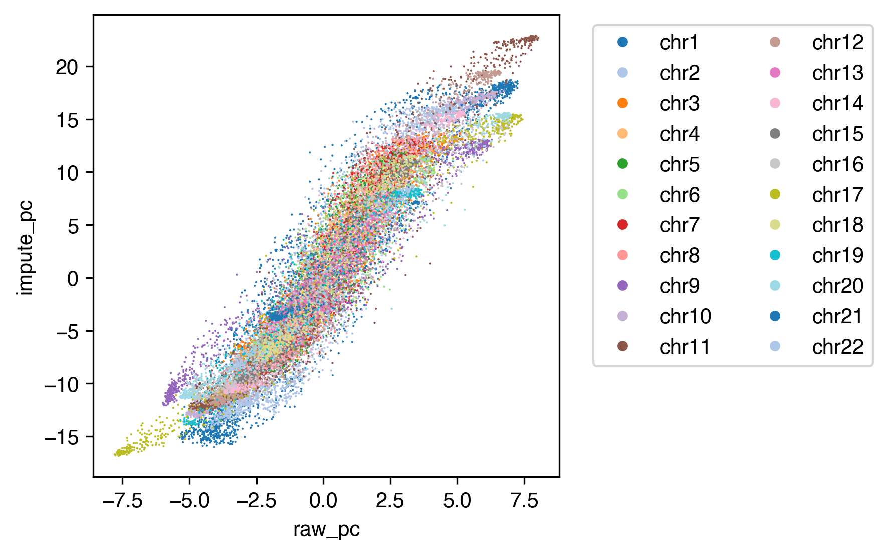
def raw_impute_corr(ct):
Call, pcall = compute_comp(f'{indir_impute}L1/{ct}.cool', keep_mat=True)
pc_impute = np.concatenate(pcall)
Call, pcall = compute_comp(f'{indir_raw}L1/{ct}.mcool::resolutions/100000', keep_mat=True)
pc_raw = np.concatenate(pcall)
return pearsonr(pc_raw, pc_impute)[0]
cpu = 20
with ProcessPoolExecutor(cpu) as executor:
futures = {}
for ct in L1meta.index:
future = executor.submit(
raw_impute_corr,
ct=ct,
)
futures[future] = ct
result = []
for future in as_completed(futures):
ct = futures[future]
tmp = [ct, L1meta.loc[ct, 'L1_annot'], future.result()]
result.append(tmp)
print(f'{ct} finished {tmp}')
c34 finished ['c34', 'Fibro-Myo', 0.9472669602893187]
c33 finished ['c33', 'Endo-Lym', 0.9535356392144603]
c32 finished ['c32', 'Fibro-Mus', 0.9176997583184119]
c30 finished ['c30', 'Epi-Duc', 0.9684158711773876]
c29 finished ['c29', 'Fibro-Adr', 0.9501121276923421]
c22 finished ['c22', 'Epi-Aci', 0.9698369792220771]
c28 finished ['c28', 'Fibro-EpiN', 0.9216951009090472]
c19 finished ['c19', 'Fibro-EndN', 0.9299171748563917]
c13 finished ['c13', 'Epi-Endcri', 0.9449528775987925]
c25 finished ['c25', 'Epi-BrstBasal', 0.9570333523610016]
c20 finished ['c20', 'Epi-Alv', 0.9598823276404593]
c18 finished ['c18', 'Epi-Krt_Lum', 0.9551505065424472]
c9 finished ['c9', 'Epi-AdrCtx', 0.9630521768033613]
c11 finished ['c11', 'Fibro-HT', 0.9403766912862495]
c3 finished ['c3', 'Endo-Ves', 0.9498370942050132]
c2 finished ['c2', 'Epi-TPB', 0.9642077465407987]
c8 finished ['c8', 'Epi-Ent', 0.9511287600128197]
c17 finished ['c17', 'Fibro-Brst', 0.9414298233122803]
c6 finished ['c6', 'Fibro-GI', 0.9525606073492526]
c4 finished ['c4', 'Epi-Gas', 0.9603840193041383]
c31 finished ['c31', 'Glia-Astro', 0.9362610222967688]
c23 finished ['c23', 'Fibro-Sk', 0.9376578734536838]
c14 finished ['c14', 'Glia-Oligo', 0.9275625278470148]
c24 finished ['c24', 'Hema-Mast', 0.9676584012039442]
c27 finished ['c27', 'Hema-NK', 0.9716769589422763]
c26 finished ['c26', 'Mus-Crd', 0.9355212453010587]
c15 finished ['c15', 'Hema-Tnaive', 0.9800725651703052]
c7 finished ['c7', 'Hema-B', 0.9805732233669663]
c5 finished ['c5', 'Mus-Skl', 0.9409652582703779]
c21 finished ['c21', 'Neu-Schw', 0.9379682410774164]
c0 finished ['c0', 'Hema-Myeloid', 0.9769746168887234]
c10 finished ['c10', 'Neu-Exc', 0.9231002422335395]
c16 finished ['c16', 'Neu-Inh', 0.9377176145177353]
c12 finished ['c12', 'SmMus_Peri', 0.9377774037161363]
c1 finished ['c1', 'Hema-Tmem', 0.9867870682811271]
L1meta = pd.read_csv(f'{ENTEX_ROOT}/L1color.tsv', sep='\t', header=0, index_col=0)
L1meta['L1_annot'] = L1meta['L1_annot'].str.replace(' ','-').str.replace('/','_')
cpu = 20
with ProcessPoolExecutor(cpu) as executor:
futures = {}
for ct in L1meta.index:
future = executor.submit(
compute_comp,
# cool_path=f'{indir_impute}L1/{ct}.cool',
cool_path=f'{indir_raw}L1/{ct}.mcool::resolutions/100000',
)
futures[future] = ct
result = {}
for future in as_completed(futures):
ct = futures[future]
result[ct] = future.result()
print(f'{ct} finished')
c34 finished
c30 finished
c32 finished
c33 finished
c29 finished
c22 finished
c28 finished
c25 finished
c20 finished
c13 finished
c18 finished
c19 finished
c2 finished
c17 finished
c9 finished
c6 finished
c11 finished
c8 finished
c4 finished
c31 finished
c3 finished
c23 finished
c24 finished
c27 finished
c26 finished
c14 finished
c15 finished
c7 finished
c21 finished
c12 finished
c5 finished
c10 finished
c16 finished
c0 finished
c1 finished
comp = bin_df[['chrom','start','end','raw_binfilter']].copy()
binfilter = bin_df['raw_binfilter'].copy()
for xx in result:
ct = L1meta.loc[xx, 'L1_annot']
# tmp = bin_df[['chrom','start','end']].copy()
comp[xx] = 0
comp.loc[binfilter, xx] = result[xx]
comp[['chrom','start','end',xx]].to_csv(f'{outdir}L1/{ct}.raw.bedgraph', sep='\t', header=False, index=False)
comp.to_hdf(f'{outdir}L1/comp.raw.hdf', key='data')
ct = 'c2'
# Call, pcall = compute_comp(f'{indir_impute}L1/{ct}.cool', keep_mat=True)
Call, pcall = compute_comp(f'{indir_raw}L1/{ct}.mcool::resolutions/100000', keep_mat=True)
from scipy.sparse import coo_matrix
from schicluster.cool import get_chrom_offsets
def chrom_sum_iterator(Call,
binall,
chrom_sizes,
chrom_offset
):
for i,c in enumerate(chrom_sizes.index):
n_bins = int(chrom_sizes[c] // 100000) + 1
tmp = np.zeros((n_bins, n_bins))
tmp[np.ix_(binall[i], binall[i])] = Call[i]
matrix = coo_matrix(np.triu(tmp))
pixel_df = pd.DataFrame({
'bin1_id': matrix.row,
'bin2_id': matrix.col,
'count': matrix.data
})
pixel_df.iloc[:, :2] += chrom_offset[c]
yield pixel_df
bin_tmp = bin_df.reset_index()
chrom_offset = {c: bin_tmp[bin_tmp['chrom'] == c].index[0] for c in chrom_sizes.index}
chrom_iter = chrom_sum_iterator(Call,
binall,
chrom_sizes,
chrom_offset
)
cooler.create_cooler(cool_uri=f'{outdir}{ct}.raw.corr.cool',
bins=bin_df[['chrom', 'start', 'end']],
pixels=chrom_iter,
ordered=True,
dtypes={'count': np.float32})
ct
'c2'
Saddle plot of merged raw pc transformed compartment#
leg = ['L23_IT', 'L4_IT', 'L56_NP', 'L5_ET', 'L5_IT', 'L6_CT', 'L6_IT', 'L6_IT_Car3', 'L6b',
'Lamp5', 'Lamp5_LHX6', 'Sncg', 'Vip', 'Pvalb', 'Pvalb_ChC', 'Sst',
'MSN_D1', 'MSN_D2', 'SubCtx', 'Amy', 'CHD7', 'Foxp2',
'ASC', 'ODC', 'OPC', 'MGC', 'EC', 'PC', 'VLMC', 'merged']
legname = ['L2/3-IT', 'L4-IT', 'L5/6-NP', 'L5-ET', 'L5-IT', 'L6-CT', 'L6-IT', 'L6-IT-Car3', 'L6b',
'Lamp5', 'Lamp5-Lhx6', 'Sncg', 'Vip', 'Pvalb', 'Pvalb-ChC', 'Sst',
'MSN-D1', 'MSN-D2', 'SubCtx-Cplx', 'Amy-Exc', 'Chd7', 'Foxp2',
'ASC', 'ODC', 'OPC', 'MGC', 'EC', 'PC', 'VLMC', 'merged'
]
# binall = np.load(f'{outdir}binfilter_raw.npy', allow_pickle=True)
# modelall = np.load(f'{outdir}pcloading_raw.npy', allow_pickle=True)
def compsaddle(cool):
sad = np.zeros((50, 50))
count = np.zeros((50, 50))
comptmp = []
for k,chrom in enumerate(chrom_sizes.index[:-1]):
Q = cool.matrix(balance=False, sparse=True).fetch(chrom).toarray()
Q = Q - np.diag(np.diag(Q))
pc = np.zeros(Q.shape[0])
binfilter = binall[k]
Q = Q[binfilter][:, binfilter]
decay = np.array([np.mean(np.diag(Q, i)) for i in range(Q.shape[0])])
E = np.zeros(Q.shape)
row, col = np.diag_indices(E.shape[0])
E[row, col] = 1
for i in range(1, E.shape[0]):
E[row[:-i], col[i:]] = (Q[row[:-i], col[i:]] + 1e-5) / (decay[i] + 1e-5)
E = E + E.T
C = np.corrcoef(np.log2(E + 0.001))
pc = (C-np.mean(C, axis=0)).dot(modelall[k])
comptmp.append(pc)
labels, groups = pd.qcut(pc, 50, labels=False, retbins=True)
sad += np.array([[E[np.ix_(labels==i, labels==j)].sum() for i in range(50)] for j in range(50)])
count += np.array([[(labels==i).sum()*(labels==j).sum() for i in range(50)] for j in range(50)])
return np.concatenate(comptmp), sad, count
mode = 'raw'
sad = np.zeros((len(leg),50,50))
count = np.zeros((len(leg),50,50))
comp = []
cpu = 10
with ProcessPoolExecutor(cpu) as executor:
futures = {}
for t,ct in enumerate(leg):
if mode=='impute':
cool = cooler.Cooler(f'{indir}{ct}/{ct}.Q.cool')
elif mode=='raw':
cool = cooler.Cooler(f'{indir}{ct}/{ct}/{ct}.raw.mcool::resolutions/100000')
future = executor.submit(
compsaddle,
cool=cool,
)
futures[future] = t
for future in as_completed(futures):
t = futures[future]
ct = leg[t]
xx, yy, zz = future.result()
comp.append(pd.Series(xx, name=ct))
sad[t] += yy
count[t] += zz
print(f'{ct} finished')
L5_ET finished
L56_NP finished
L23_IT finished
L4_IT finished
L6_IT finished
L6b finished
L5_IT finished
L6_IT_Car3 finished
Lamp5 finished
L6_CT finished
Lamp5_LHX6 finished
SubCtx finished
Sncg finished
Pvalb_ChC finished
Vip finished
Pvalb finished
Sst finished
MSN_D1 finished
MSN_D2 finished
Amy finished
CHD7 finished
Foxp2 finished
OPC finished
ODC finished
ASC finished
VLMC finished
EC finished
PC finished
MGC finished
merged finished
bins_df = cool.bins()[:]
bins_df.index = bins_df['chrom'].astype(str) + '-' + (bins_df['start'] // res).astype(str)
compidx = np.concatenate([bins_df.index[bins_df['chrom']==c][binall[i]] for i,c in enumerate(chrom_sizes.index[:-1])])
comp = pd.concat(comp, axis=1)
comp.index = compidx
comp.to_hdf(f'{outdir}comp_{mode}_mergerawpca.hdf', key='data')
sad = sad / count
np.save(f'{outdir}saddle_{mode}_mergerawpca.npy', sad)
ws = 10
compstr = [[sad[i][:ws, :ws].mean(), sad[i][-ws:, -ws:].mean(), sad[i][:ws, -ws:].mean(), sad[i][-ws:, :ws].mean(),
(sad[i][:ws, :ws].sum() + sad[i][-ws:, -ws:].sum()) / (sad[i][:ws, -ws:].sum() + sad[i][-ws:, :ws].sum())]
for i in range(len(leg))]
compstr = pd.DataFrame(compstr, index=leg, columns=['BB', 'AA', 'BA', 'AB', 'strength'])
compstr.sort_values('strength')
| BB | AA | BA | AB | strength | |
|---|---|---|---|---|---|
| L5_ET | 1.348505 | 1.262203 | 0.708481 | 0.708481 | 1.842468 |
| L6b | 1.291788 | 1.330709 | 0.683750 | 0.683750 | 1.917731 |
| SubCtx | 1.236652 | 1.368936 | 0.658978 | 0.658978 | 1.976991 |
| L6_IT_Car3 | 1.299906 | 1.325469 | 0.626082 | 0.626082 | 2.096671 |
| L56_NP | 1.311511 | 1.331668 | 0.626919 | 0.626919 | 2.108070 |
| L6_IT | 1.298863 | 1.347858 | 0.623379 | 0.623379 | 2.122883 |
| Amy | 1.343647 | 1.332711 | 0.614503 | 0.614503 | 2.177662 |
| Foxp2 | 1.291581 | 1.370952 | 0.607887 | 0.607887 | 2.189991 |
| Sncg | 1.345780 | 1.375168 | 0.619657 | 0.619657 | 2.195527 |
| L6_CT | 1.291535 | 1.397869 | 0.611131 | 0.611131 | 2.200350 |
| CHD7 | 1.297236 | 1.364787 | 0.600250 | 0.600250 | 2.217427 |
| merged | 1.231826 | 1.475701 | 0.605544 | 0.605544 | 2.235614 |
| Pvalb_ChC | 1.274394 | 1.436267 | 0.603899 | 0.603899 | 2.244299 |
| L23_IT | 1.256678 | 1.393642 | 0.583772 | 0.583772 | 2.269996 |
| L5_IT | 1.263534 | 1.455531 | 0.597170 | 0.597170 | 2.276625 |
| MSN_D1 | 1.241947 | 1.448782 | 0.589151 | 0.589151 | 2.283567 |
| MSN_D2 | 1.277473 | 1.409101 | 0.574044 | 0.574044 | 2.340041 |
| Vip | 1.325455 | 1.422411 | 0.579338 | 0.579338 | 2.371556 |
| Pvalb | 1.265274 | 1.515272 | 0.578515 | 0.578515 | 2.403175 |
| Sst | 1.291474 | 1.466535 | 0.571911 | 0.571911 | 2.411224 |
| Lamp5_LHX6 | 1.321902 | 1.435453 | 0.563871 | 0.563871 | 2.445023 |
| L4_IT | 1.228220 | 1.490808 | 0.554261 | 0.554261 | 2.452842 |
| Lamp5 | 1.341595 | 1.420382 | 0.555473 | 0.555473 | 2.486151 |
| EC | 1.516187 | 1.381944 | 0.542193 | 0.542193 | 2.672600 |
| ASC | 1.463769 | 1.367253 | 0.528202 | 0.528202 | 2.679866 |
| VLMC | 1.550196 | 1.322227 | 0.528425 | 0.528425 | 2.717910 |
| OPC | 1.614372 | 1.415822 | 0.479717 | 0.479717 | 3.158317 |
| ODC | 1.518158 | 1.442945 | 0.465697 | 0.465697 | 3.179216 |
| PC | 1.683920 | 1.473416 | 0.441736 | 0.441736 | 3.573785 |
| MGC | 1.740897 | 1.540446 | 0.326825 | 0.326825 | 5.020036 |
# raw
vmin, vmax = -0.8, 0.8
fig, axes = plt.subplots(((len(leg))//6+1), 6, figsize=(15,15), dpi=300)
fig.subplots_adjust(hspace=0.2, wspace=0.1)
for i,xx in enumerate(leg):
ax = axes.flatten()[i]
plot = ax.imshow(np.log2(sad[i]+0.001), cmap='coolwarm', vmin=vmin, vmax=vmax)
# plot = ax.imshow(sad[i], cmap='coolwarm', vmin=0, vmax=2)
ax.set_xticks([])
ax.set_yticks([])
ax.set_title(legname[i], fontsize=15)
ax.text(40, 45, np.around(compstr.loc[xx, 'AA']/compstr.loc[xx, 'AB'], decimals=3), ha='center', va='center', fontsize=15)
ax.text(10, 5, np.around(compstr.loc[xx, 'BB']/compstr.loc[xx, 'BA'], decimals=3), ha='center', va='center', fontsize=15)
cbar = plt.colorbar(plot, ax=axes.flatten()[len(leg)])
cbar.set_ticks([vmin,vmax])
cbar.set_label('Normalized Interaction')
for ax in axes.flatten()[len(leg):]:
ax.axis('off')
# plt.tight_layout()
# plt.savefig(f'{indir}/plot/celltype_saddle_raw.pdf', transparent=True)
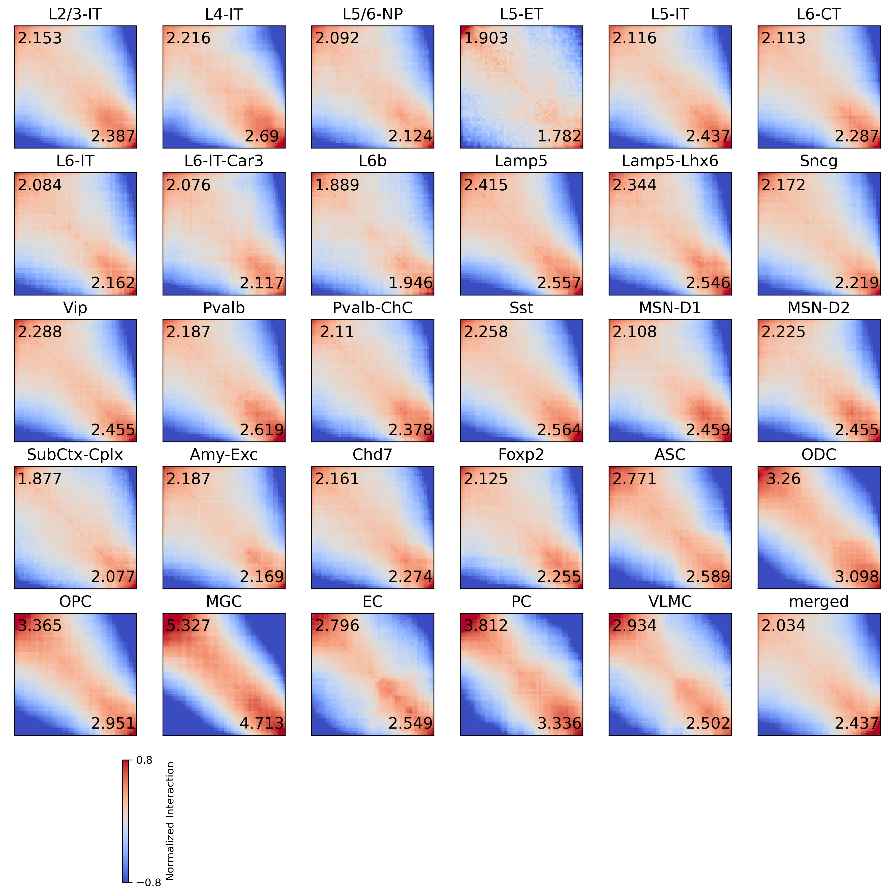